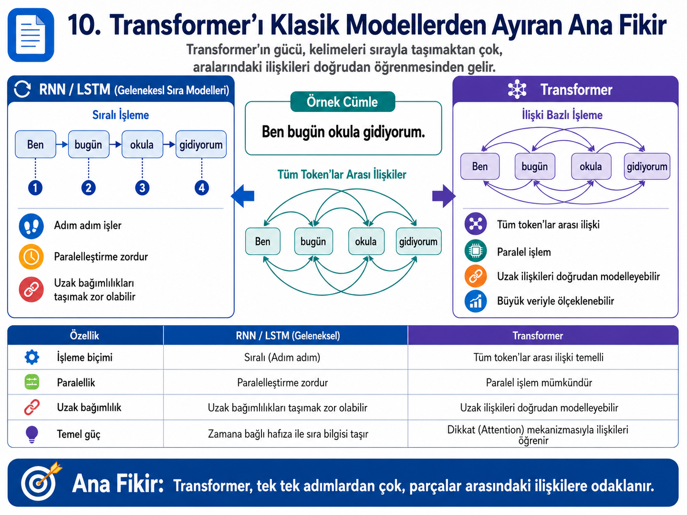
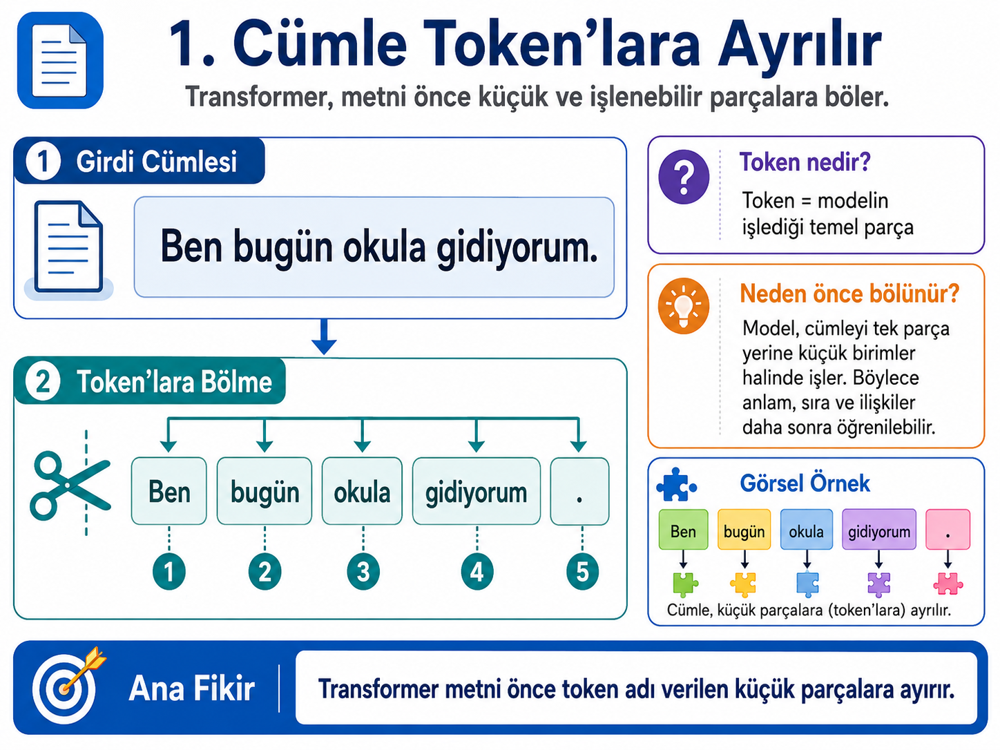
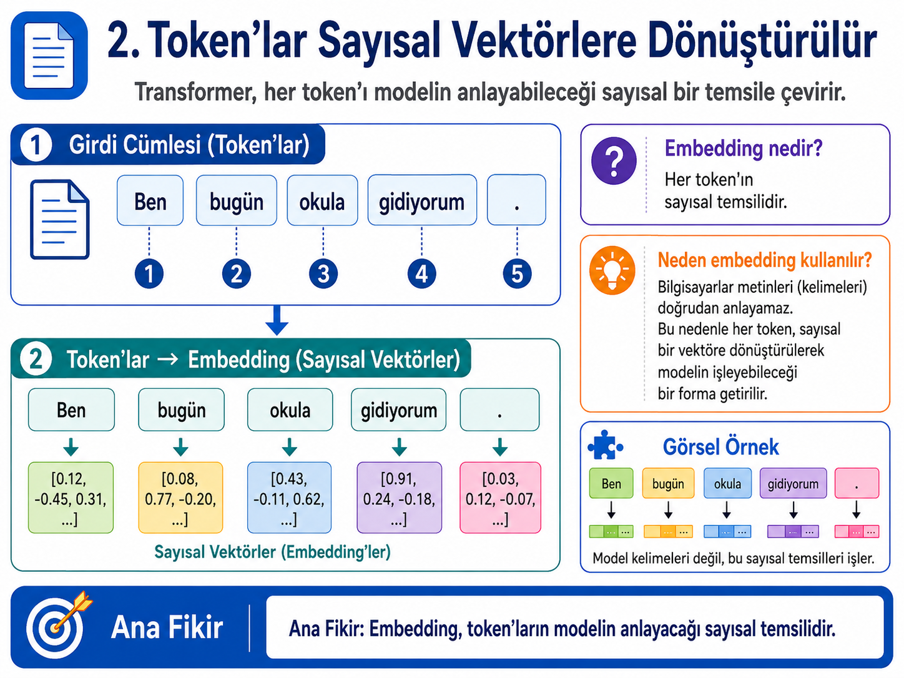
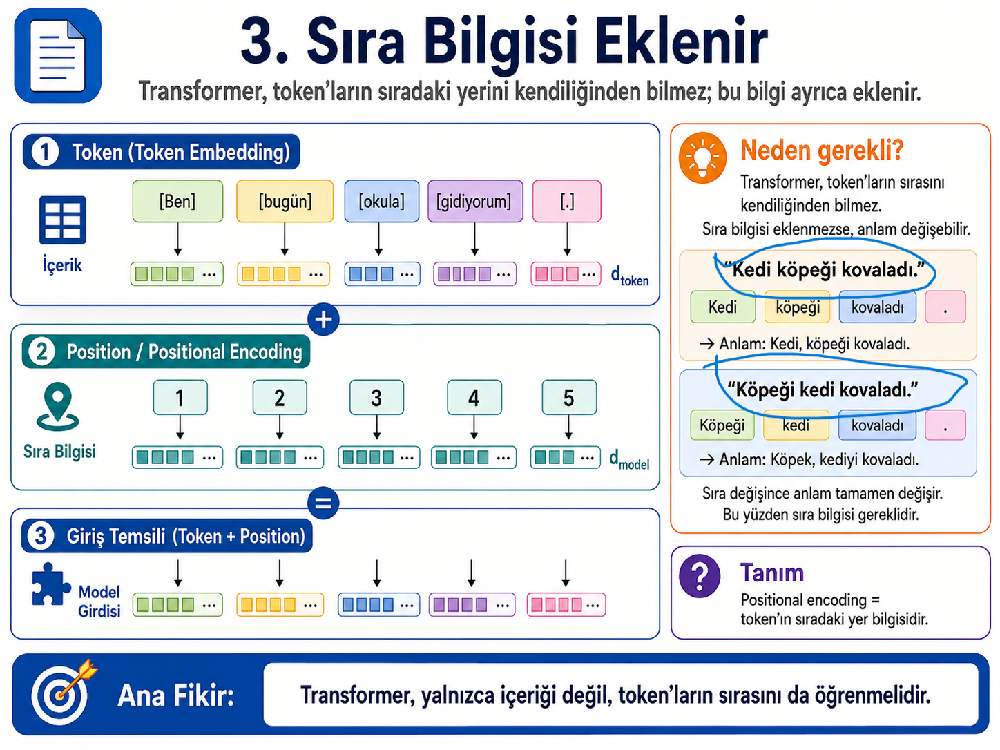
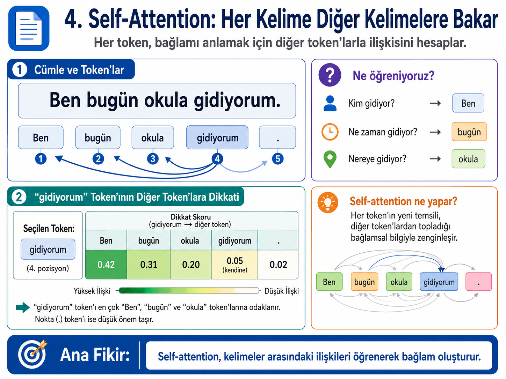
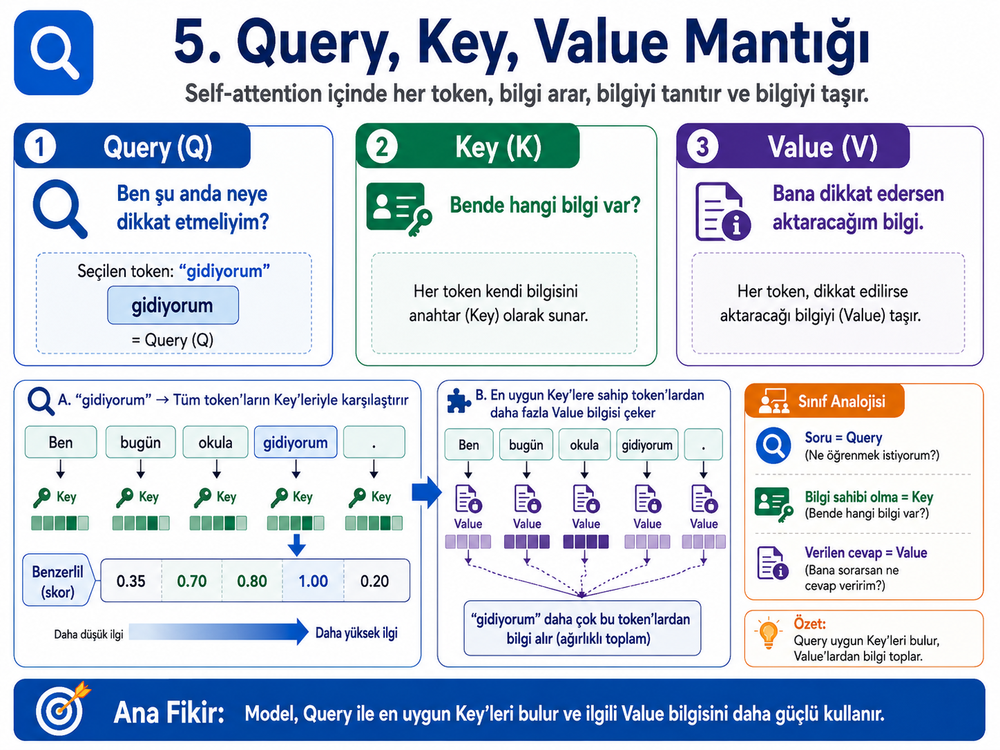
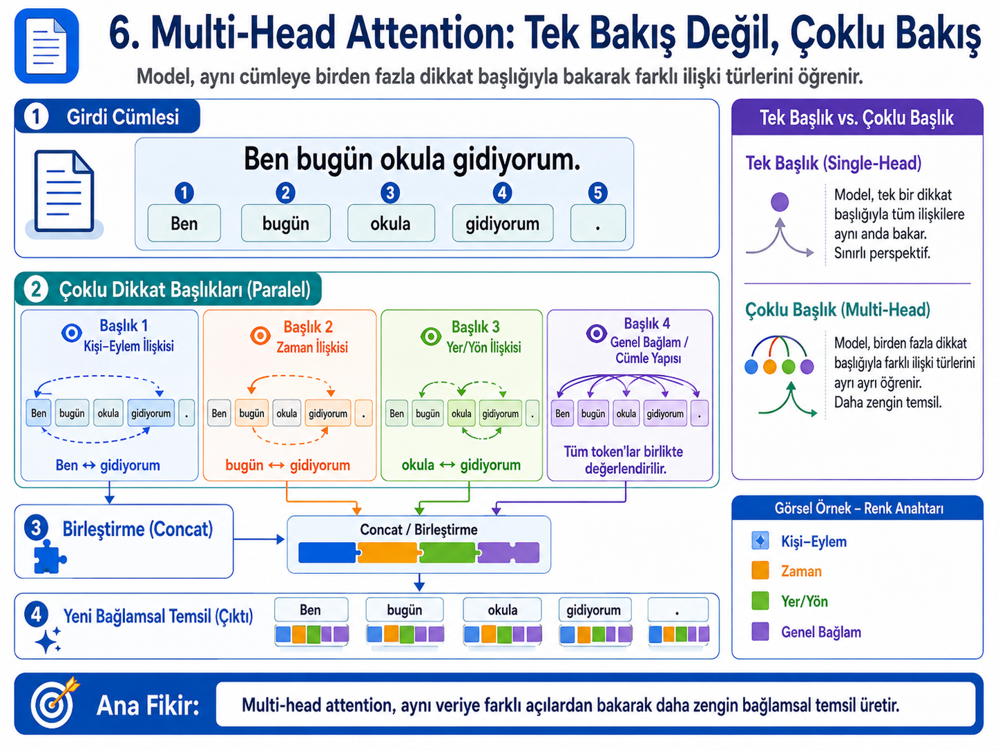
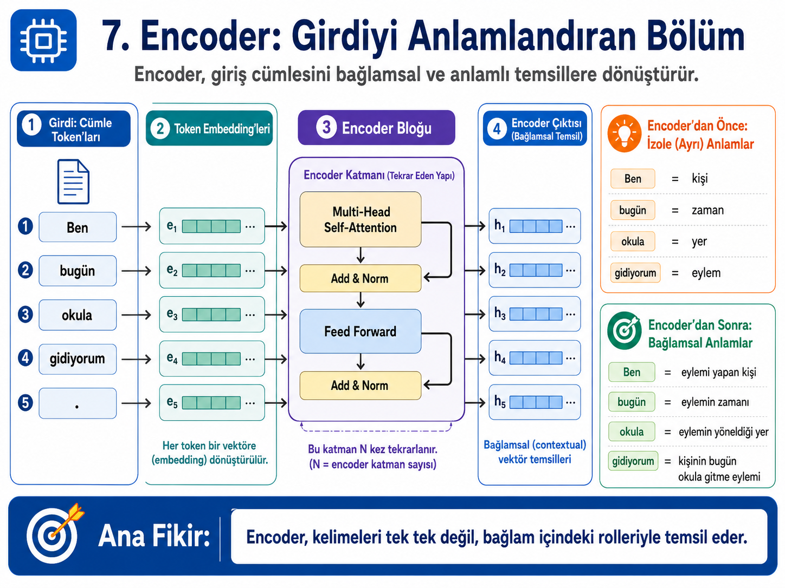
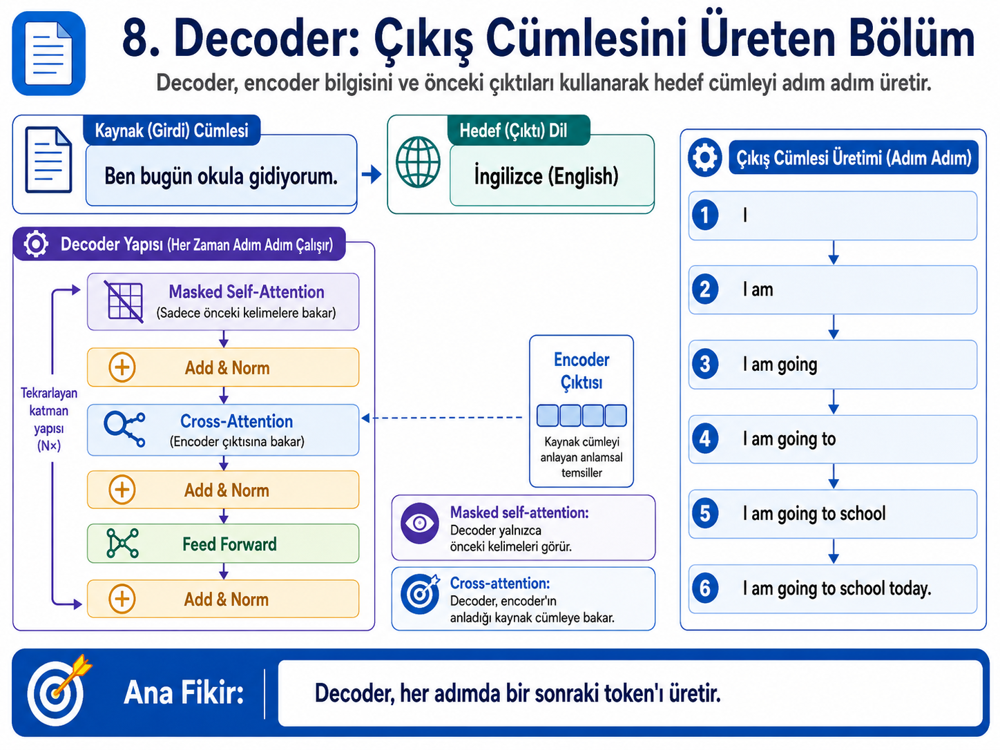
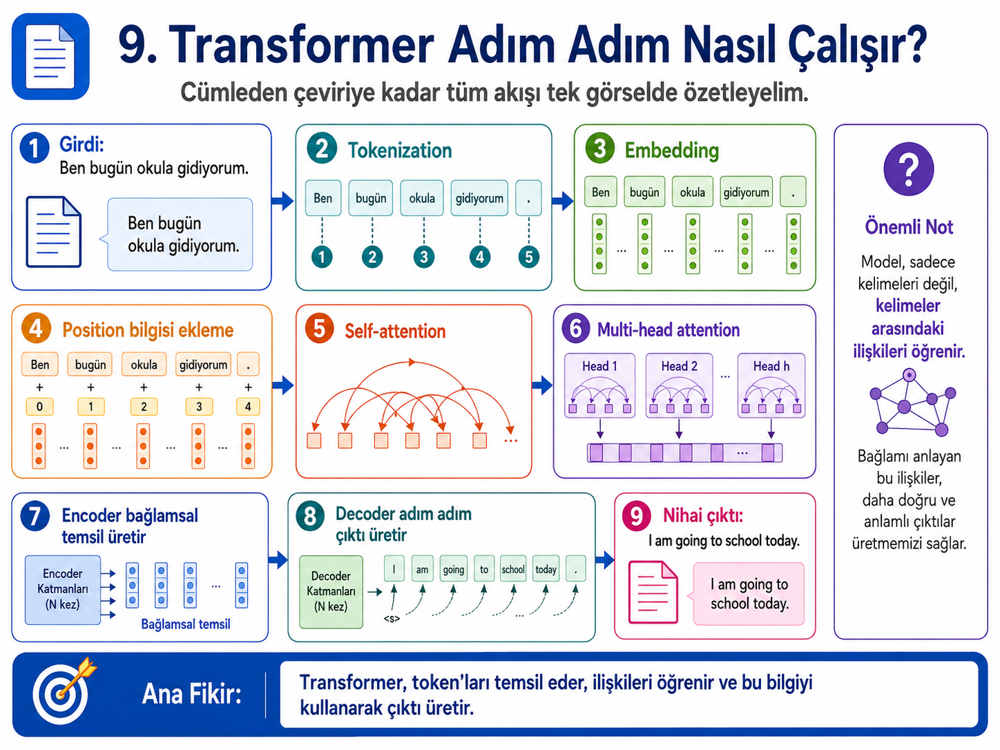

0Bölümün amacı
Transformer, modern derin öğrenmenin en etkili mimarilerinden biridir. Başlangıçta doğal dil işleme ve makine çevirisi için geliştirilmiş; daha sonra görüntü işleme, video analizi, çok modlu öğrenme, tıbbi görüntüleme, uzaktan algılama ve robotik algı gibi alanlara yayılmıştır. Bu bölümde Transformer’ın yalnızca “formüllerden oluşan karmaşık bir yapı” değil, verinin parçaları arasındaki ilişkileri öğrenen genel bir temsil mimarisi olduğu gösterilecektir.
Bölümün ana hedefi, öğrencinin Transformer ve Vision Transformer mimarilerini hem sezgisel hem de temel matematik düzeyinde anlayabilmesidir. Bu nedenle anlatımda önce tarihsel ihtiyaç ortaya konacak, sonra token, embedding, positional encoding, self-attention, Query-Key-Value, multi-head attention, encoder ve decoder adım adım açıklanacaktır. Son bölümde aynı mantığın görüntülere nasıl aktarıldığı, yani Vision Transformer yaklaşımı ele alınacaktır.
İçindekiler
1.png, 2.png, ..., 10.png isimli görsellerle aynı klasörde çalışacak şekilde hazırlanmıştır. Görseller HTML içine gömülü değildir; aynı klasörde bulunmaları yeterlidir.
1Tarihsel arka plan: Transformer neden ortaya çıktı?
Derin öğrenmenin erken dönemlerinde farklı veri türleri için farklı mimari aileleri öne çıktı. Görüntü işleme alanında CNN mimarileri, özellikle 2012 sonrasında büyük bir ivme kazandı. CNN’lerin başarısı, görüntünün yerel yapısını iyi kullanmalarından kaynaklanıyordu. Küçük filtreler görüntü üzerinde gezdiriliyor, kenar, köşe, doku ve daha üst düzey nesne parçaları katman katman öğreniliyordu.
Dil işleme ve zaman serileri tarafında ise RNN, LSTM ve GRU gibi sıralı modeller uzun süre temel yaklaşım oldu. Bu modeller bir diziyi adım adım işler. Bir cümlede önce birinci kelime, sonra ikinci kelime, sonra üçüncü kelime işlenir. Her adımda model önceki adımlardan gelen bilgiyi gizli durum adı verilen bir temsil içinde taşımaya çalışır.
Bu yaklaşım sezgisel olarak doğrudur; çünkü insan da metni genellikle soldan sağa okur. Ancak bilgisayar mimarisi açısından önemli sorunlar doğurur. Bir RNN modelinde üçüncü kelimenin işlenebilmesi için ikinci kelimenin, ikinci kelimenin işlenebilmesi için birinci kelimenin işlenmiş olması gerekir. Bu durum paralel hesaplamayı sınırlar. Ayrıca uzun cümlelerde uzak kelimeler arasındaki ilişkileri taşımak zorlaşır.
LSTM ve GRU bu problemi hafifletmek için kapı mekanizmaları geliştirmiştir. Fakat temel sıralı işleme mantığı korunur. Attention fikri ise bu noktada önemli bir değişim getirmiştir: Model, çıktı üretirken giriş dizisinin yalnızca son durumuna değil, farklı bölümlerine farklı ağırlıklarla bakabilir. 2017’de önerilen Transformer mimarisi bu fikri merkeze koymuş ve recurrence ya da convolution kullanmadan yalnızca attention temelli bir mimariyle güçlü sonuçlar alınabileceğini göstermiştir.

Kısa zaman çizelgesi
RNN tabanlı modeller dizisel veriyi adım adım işledi. LSTM, uzun bağımlılıkları daha iyi taşıyabilmek için kapı mekanizmaları kullandı.
Makine çevirisi modellerinde attention, hedef kelime üretilirken kaynak cümlenin ilgili bölümlerine odaklanmayı sağladı. Attention başlangıçta yardımcı bir mekanizmaydı.
Attention Is All You Need çalışması, recurrence ve convolution olmadan, attention temelli encoder-decoder yapısının makine çevirisinde çok güçlü olabileceğini gösterdi.
BERT, encoder tabanlı çift yönlü bağlamsal temsil fikrini; GPT çizgisi ise decoder tabanlı bir sonraki token üretimi yaklaşımını yaygınlaştırdı.
Vision Transformer, görüntüyü küçük yamalara ayırıp bu yamaları kelime token’ları gibi işleyerek CNN olmadan güçlü görüntü sınıflandırma yapılabileceğini gösterdi.
Swin Transformer, CLIP, MAE, DINOv2, SAM ve SAM 2 gibi çalışmalar Transformer tabanlı görsel temsil öğrenmenin segmentasyon, video, çok modlu öğrenme ve self-supervised learning alanlarında da etkili olduğunu gösterdi.
2Transformer’ın temel fikri: Tek tek adımlar değil, ilişkiler
Transformer’ın temel düşüncesi şudur: Bir veri dizisindeki her parça, diğer parçalarla ilişkisi üzerinden anlam kazanır. Bir cümledeki kelime, yalnızca sözlük anlamıyla değil, cümledeki diğer kelimelerle kurduğu ilişkiyle anlaşılır. Aynı durum görüntü için de geçerlidir. Bir piksel ya da görüntü yaması, tek başına sınırlı bilgi taşır; fakat komşu bölgelerle ve görüntünün uzak bölgeleriyle ilişkisi dikkate alındığında anlamlı hâle gelir.
Bu nedenle Transformer’ı basitçe “kelimeleri işleyen bir model” olarak görmek eksik olur. Transformer, daha genel olarak parçalar arası ilişki öğrenen bir mimaridir. Dil tarafında bu parçalar token’lardır. Görüntü tarafında ise patch adı verilen görüntü yamalarıdır.
Bu bakış, Vision Transformer için kritik önemdedir. Çünkü CNN’ler görüntüyü yerel filtrelerle işlerken, Vision Transformer görüntüyü bir dizi patch token olarak ele alır ve bu token’ların birbirleriyle ilişkisini self-attention ile öğrenir.
3Tokenizasyon: Girdiyi işlenebilir parçalara ayırmak
Transformer’ın ilk adımı girdiyi küçük işlenebilir parçalara ayırmaktır. Metin için bu parçalara token denir. Token kelime olabilir, kelime parçası olabilir, noktalama işareti olabilir veya özel bir sembol olabilir.
Örneğin şu cümleyi ele alalım:
Basit bir gösterimde bu cümle şu token’lara ayrılabilir:

Tokenizasyon, modelin dünyayı hangi parçalar üzerinden göreceğini belirler. İnsan için “gidiyorum” tek bir kelime gibi görünür. Ancak Türkçe gibi eklemeli dillerde bu kelime kök ve eklerden oluşur. Bazı modeller bu kelimeyi tek token olarak alabilirken, bazı tokenizasyon yöntemleri kelimeyi alt parçalara ayırabilir.
4Embedding: Token’ları sayısal vektörlere dönüştürmek
Sinir ağları metni doğrudan işleyemez. “Ben”, “bugün” veya “okula” gibi ifadeler model için başlangıçta semboldür. Modelin bu semboller üzerinde işlem yapabilmesi için her token’ın sayısal bir temsile dönüştürülmesi gerekir. Bu sayısal temsil embedding olarak adlandırılır.

Bir token’ın tek bir sayı ile temsil edilmemesinin nedeni, anlamın tek boyutlu olmamasıdır. “Okula” kelimesi hem bir yer bilgisi taşır, hem yönelme anlamı taşır, hem de “gidiyorum” eylemiyle ilişkili olabilir. Bu nedenle token çok boyutlu bir vektörle temsil edilir.
Embedding’in temel matematiği
Modelin sözlüğünde \(V\) adet token olsun. Her token \(d_{model}\) boyutlu bir vektörle temsil edilsin. Bu durumda embedding matrisi:
Bir token one-hot vektör \(x_i\) ile gösterilirse, embedding vektörü şu şekilde elde edilir:
Burada yapılan işlem aslında embedding matrisinden ilgili token’a karşılık gelen satırı seçmektir. Eğitim sürecinde bu vektörler güncellenir. Model, hangi token’ın hangi sayısal konumda temsil edilmesi gerektiğini veriden öğrenir.
5Positional Encoding: Modelin sıra bilgisini alması
Transformer, RNN gibi token’ları sırayla işlemez. Bu paralel çalışma avantajı sağlar. Fakat bunun bir sonucu vardır: Model token’ların sıradaki yerini kendiliğinden bilmez.
Şu iki cümleyi düşünelim:
“Köpeği kedi kovaladı.”
Kelimeler benzerdir; fakat sıra değiştiğinde anlam değişir. Bu nedenle token embedding’lerine konum bilgisi eklenmelidir.

Matematiksel olarak i. token’ın embedding vektörü \(e_i\), i. pozisyonun konum vektörü \(p_i\) olsun. Transformer’a verilen giriş:
İlk Transformer çalışmasında sinüs ve kosinüs temelli positional encoding kullanılmıştır:
Bu formüllerin amacı her pozisyona farklı fakat düzenli bir vektör vermektir. Böylece model “bu hangi token?” sorusuna ek olarak “bu token nerede?” sorusunu da cevaplayabilir.
6Self-Attention: Her token diğer token’lara bakar
Self-attention, Transformer’ın merkezindeki mekanizmadır. Bir token’ın temsilini oluştururken diğer token’lardan ne kadar bilgi alacağını hesaplar. Böylece her token yalnızca kendi anlamını değil, bağlam içindeki rolünü de öğrenir.

“Ben bugün okula gidiyorum.” cümlesinde “gidiyorum” token’ını düşünelim. Bu token tek başına bir eylemi ifade eder. Ancak eylemin tam anlamı için başka bilgilere ihtiyaç vardır:
- Kim gidiyor? → Ben
- Ne zaman gidiyor? → bugün
- Nereye gidiyor? → okula
Self-attention bu ilişkileri elle yazılmış kurallarla değil, öğrenilen ağırlıklarla hesaplar. Örneğin “gidiyorum” token’ı “Ben”e 0.42, “bugün”e 0.31, “okula”ya 0.20 ağırlık verebilir. Bu değerler bağlamdan bağlama değişir.
| Token | Olası dikkat ağırlığı | Anlamı |
|---|---|---|
| Ben | 0.42 | Eylemi yapan kişi bilgisini taşır. |
| bugün | 0.31 | Eylemin zamanını belirtir. |
| okula | 0.20 | Eylemin yöneldiği yeri belirtir. |
| gidiyorum | 0.05 | Token’ın kendi bilgisi de sınırlı ölçüde korunur. |
| . | 0.02 | Noktalama düşük önem taşıyabilir. |
Görüntü işlemeye aktardığımızda, self-attention’ın benzer bir rolü vardır. Bir görüntüde nesnenin başı, gövdesi ve kenarları farklı patch’lerde bulunabilir. Self-attention, bu patch’ler arasında ilişki kurarak daha bütüncül bir temsil oluşturabilir.
7Query, Key, Value: Dikkatin matematiksel çekirdeği
Self-attention’ın temel hesaplaması Query, Key ve Value kavramlarıyla yapılır. Bu üç kavramı sezgisel olarak şöyle düşünebiliriz:
- Query: Ben şu anda hangi bilgiyi arıyorum?
- Key: Bende hangi bilginin bulunduğunu nasıl tanıtırım?
- Value: Bana dikkat edilirse hangi bilgiyi aktarırım?

Giriş token temsilleri \(X\) matrisi ile gösterilsin. Transformer, bu girişten üç farklı temsil üretir:
Burada \(W_Q\), \(W_K\) ve \(W_V\) eğitim sırasında öğrenilen ağırlık matrisleridir. Attention şu şekilde hesaplanır:
Bu formülü adım adım yorumlayalım:
- \(QK^T\): Her token’ın Query vektörü, diğer token’ların Key vektörleriyle karşılaştırılır.
- \(\sqrt{d_k}\): Skorlar ölçeklenir; büyük boyutlu vektörlerde değerlerin aşırı büyümesi engellenir.
softmax: Skorlar toplamı 1 olan dikkat ağırlıklarına dönüştürülür.- \(V\): Bu ağırlıklarla Value vektörleri toplanır.
Tek bir token için dikkat hesabı daha sade biçimde şöyle yazılabilir:
Burada \(o_i\), i. token’ın diğer token’lardan topladığı bilgilerle oluşan yeni temsilidir.
8Multi-Head Attention: Aynı veriye birden fazla açıdan bakmak
Bir cümlede tek bir ilişki türü yoktur. “Ben bugün okula gidiyorum” cümlesinde kişi-eylem, zaman-eylem, yer-eylem ve genel bağlam ilişkileri aynı anda bulunur. Tek bir attention başlığı bu ilişkilerin tamamını yakalamakta sınırlı kalabilir.

Multi-head attention, aynı giriş üzerinde birden fazla attention mekanizmasını paralel çalıştırır. Her başlık farklı bir temsil alt uzayında farklı ilişkilere odaklanabilir.
Burada \(h\) attention başlığı sayısıdır. Başlıklar birleştirilir ve \(W_O\) matrisi ile tekrar model boyutuna dönüştürülür.
9Encoder: Girdiyi bağlamsal temsile dönüştürmek
Encoder, giriş token’larını bağlamı dikkate alan temsillere dönüştürür. Başlangıçta “Ben” yalnızca kişi, “bugün” zaman, “okula” yer, “gidiyorum” ise eylem gibi düşünülebilir. Encoder’dan sonra bu temsiller bağlam içinde yeniden anlam kazanır.

Tipik bir Transformer encoder katmanı şu bileşenlerden oluşur:
- Multi-head self-attention
- Residual bağlantı ve layer normalization
- Feed-forward network
- Residual bağlantı ve layer normalization
Sade matematiksel gösterim:
Residual bağlantı, katmanın öğrendiği yeni bilgiyi önceki temsilin üzerine ekler. Bu yapı derin ağların eğitimini daha kararlı hâle getirir. Layer normalization ise temsil değerlerinin ölçeğini düzenler.
Feed-forward network her token’a ayrı ayrı uygulanan küçük bir sinir ağıdır:
Burada \(\sigma\), ReLU veya GELU gibi doğrusal olmayan bir aktivasyon fonksiyonudur.
10Decoder: Çıktıyı adım adım üretmek
Encoder kaynak girdiyi anlamlı temsillere dönüştürür. Decoder ise bu bilgiyi ve daha önce üretilmiş token’ları kullanarak hedef çıktıyı adım adım üretir. Makine çevirisinde kaynak cümle Türkçe, hedef cümle İngilizce olabilir.

Decoder içinde üç temel yapı bulunur:
- Masked self-attention: Decoder yalnızca önceki token’lara bakabilir. Gelecekteki token’ları görmesi engellenir.
- Cross-attention: Decoder, encoder’ın kaynak cümle için ürettiği temsillere bakar.
- Feed-forward network: Her adımda elde edilen temsil doğrusal olmayan biçimde dönüştürülür.
Masked self-attention özellikle üretici modeller için kritiktir. Model bir sonraki token’ı tahmin ederken gelecekteki token’ı görmemelidir. Aksi hâlde eğitim sırasında gerçek cevabı doğrudan görmüş olur.
11Transformer’ın uçtan uca çalışma akışı
Şimdiye kadar Transformer’ın parçalarını ayrı ayrı ele aldık. Aşağıdaki görsel, tokenizasyondan çıktı üretimine kadar tüm süreci özetler.

Bu akış şu şekilde okunabilir:
- Girdi cümlesi alınır.
- Cümle token’lara ayrılır.
- Her token embedding vektörüne dönüştürülür.
- Token’lara sıra bilgisi eklenir.
- Self-attention ile token’lar arası ilişkiler hesaplanır.
- Multi-head attention ile farklı ilişki türleri paralel olarak öğrenilir.
- Encoder bağlamsal temsil üretir.
- Decoder hedef çıktıyı adım adım üretir.
Bu noktada Transformer’ın ana fikri netleşir: Model token’ları tek tek ezberlemez; token’lar arasındaki ilişkileri öğrenerek bağlamsal temsil üretir.
12Vision Transformer: Metindeki token fikrini görüntüye taşımak
Vision Transformer’ın çıkış sorusu oldukça basittir: Transformer kelimelerden oluşan bir token dizisi üzerinde çalışabiliyorsa, görüntü de token dizisine dönüştürülebilir mi?
Bu sorunun cevabı evettir. Bir görüntü küçük kare parçalara ayrılır. Bu parçalara patch denir. Her patch düzleştirilir ve doğrusal bir katmandan geçirilerek embedding vektörüne dönüştürülür. Böylece görüntü, Transformer encoder’ın işleyebileceği bir token dizisi hâline gelir.
Örnek hesaplama: 224×224 görüntü ve 16×16 patch
RGB bir görüntümüz olsun:
Görüntüyü 16×16 boyutlu yamalara bölersek, her eksende 14 yama oluşur:
Toplam patch sayısı:
Her patch’in ham boyutu:
Bu 768 boyutlu vektör doğrusal bir katmandan geçirilerek model boyutu olan \(d_{model}\) boyutlu patch embedding’e dönüştürülür:
Daha sonra her patch embedding’e pozisyon bilgisi eklenir:
CLS token
ViT mimarisinde görüntü sınıflandırması için genellikle özel bir [CLS] token kullanılır. Bu token, tüm patch’lerden bilgi toplayan özet temsil gibi çalışır. Transformer encoder bloklarından sonra sınıflandırma katmanı çoğunlukla bu token’ın son temsiline uygulanır:
ViT ile CNN arasındaki temel fark
| Özellik | CNN | Vision Transformer |
|---|---|---|
| Temel işlem | Konvolüsyon filtresi | Patch token’ları arasında self-attention |
| Yerel örüntü | Doğal olarak güçlü | Öğrenilmesi gerekir; büyük veri ihtiyacı artabilir |
| Uzak ilişki | Derin katmanlarla dolaylı kurulur | Attention ile doğrudan kurulabilir |
| İndüktif önyargı | Yerellik ve translasyon eşdeğerliliği güçlüdür | Daha az yapısal önyargı, daha yüksek esneklik |
| Güçlü olduğu bağlam | Küçük/orta veri, pratik görüntü görevleri | Büyük ölçekli ön eğitim, transfer öğrenme, çok modlu sistemler |
Attention maliyeti
Vision Transformer’ın önemli sınırlamalarından biri self-attention maliyetidir. Klasik attention, token sayısına göre karesel karmaşıklık taşır:
Burada \(N\) token sayısı, \(d\) temsil boyutudur. Görüntü çözünürlüğü arttıkça patch sayısı artar; patch sayısı arttıkça attention maliyeti hızla yükselir. Bu nedenle Swin Transformer gibi mimariler attention’ı tüm görüntü üzerinde değil, yerel pencerelerde hesaplayarak verimlilik sağlar.
13Transformer bugün nereye gidiyor?
Transformer mimarisi artık yalnızca doğal dil işleme modeli değildir. Görüntü, metin, ses, video, 3B veri, robotik algı ve biyolojik dizilerde kullanılan genel bir temsil öğrenme yaklaşımına dönüşmüştür. Ancak bu yaygınlaşma yeni problemleri de beraberinde getirmiştir: yüksek hesaplama maliyeti, büyük veri gereksinimi, enerji tüketimi ve uzun dizilerde attention’ın karesel karmaşıklığı.
Swin Transformer
Swin Transformer, görüntü alanında Transformer’ı daha verimli kullanmak için shifted window yaklaşımını önerir. Model, attention’ı tüm görüntü üzerinde hesaplamak yerine yerel pencerelerde hesaplar ve pencereleri kaydırarak bölgeler arası bağlantı kurar. Bu yaklaşım görüntü sınıflandırma, nesne tespiti ve segmentasyon gibi yoğun tahmin görevleri için daha uygun bir omurga sağlar.
CLIP ve çok modlu öğrenme
CLIP, görüntü ve metni ortak bir temsil uzayında hizalamaya çalışır. Bu yaklaşım, görsel verinin doğal dil ile aranması, sıfır atış sınıflandırma ve çok modlu yapay zekâ sistemleri için önemli bir temel oluşturmuştur.
DINOv2 ve self-supervised görsel temsil
DINOv2 gibi çalışmalar, çok büyük görüntü koleksiyonları üzerinde etiket kullanmadan güçlü görsel temsil öğrenmeyi hedefler. Bu tür modeller, tıbbi görüntüleme veya endüstriyel görüntü işleme gibi etiketli veri üretmenin pahalı olduğu alanlar için önemlidir.
SAM ve SAM 2
Segment Anything yaklaşımı, segmentasyonu belirli bir veri kümesine özel model olmaktan çıkarıp kullanıcı ipuçlarıyla yönlendirilebilen genel bir probleme dönüştürmüştür. SAM 2 ile bu yaklaşım görüntüden videoya genişlemiş ve streaming memory gibi yapılarla video segmentasyonu tarafında daha güçlü hâle gelmiştir.
Mamba ve verimli dizisel modelleme
Attention’ın uzun dizilerdeki maliyeti nedeniyle durum uzayı modelleri ve Mamba benzeri yaklaşımlar tekrar ilgi çekmiştir. Görsel alanda MambaVision gibi hibrit yaklaşımlar, Transformer’ın temsil gücünü daha verimli dizisel modelleme mekanizmalarıyla birleştirmeye çalışmaktadır.
14Bu görseller ders içinde nasıl kullanılabilir?
Ders akışı önerisi: Önce Görsel 10 ile RNN/LSTM ve Transformer arasındaki temel fark gösterilebilir. Ardından Görsel 1–6 ile Transformer’ın hesaplama zinciri kurulabilir. Görsel 7–9 ile mimari tamamlanabilir. Son aşamada aynı fikirlerin Vision Transformer’da görüntü yamalarına nasıl taşındığı anlatılabilir.
| Görsel | Ders içindeki rolü | Ana mesaj |
|---|---|---|
| 1 | Tokenizasyon | Model bütün cümleyi değil, küçük işlenebilir parçaları görür. |
| 2 | Embedding | Token’lar sayısal vektörlere dönüşmeden sinir ağı tarafından işlenemez. |
| 3 | Positional encoding | Transformer sırayı kendiliğinden bilmez; sıra bilgisi ayrıca eklenir. |
| 4 | Self-attention | Her token diğer token’lara farklı ağırlıklarla bakarak bağlam oluşturur. |
| 5 | Query-Key-Value | Query arar, Key tanıtır, Value bilgi taşır. |
| 6 | Multi-head attention | Model aynı veriye birden fazla ilişki türü açısından bakar. |
| 7 | Encoder | Giriş token’ları bağlamsal temsillere dönüşür. |
| 8 | Decoder | Model önceki çıktıları ve encoder bilgisini kullanarak adım adım üretim yapar. |
| 9 | Genel akış | Token’dan çeviriye kadar tüm süreç tek görselde özetlenir. |
| 10 | Mimari karşılaştırma | Transformer’ın gücü sırayla taşımaktan değil, ilişkileri doğrudan modellemekten gelir. |
15Bölüm özeti
Transformer, dizisel verilerin işlenmesinde önemli bir paradigma değişimi yaratmıştır. RNN/LSTM gibi modeller bilgiyi adım adım taşırken Transformer, token’lar arasındaki ilişkileri doğrudan attention mekanizmasıyla hesaplar. Bu yapı hem paralel eğitim imkânı sağlar hem de uzak bağımlılıkları modellemeyi kolaylaştırır.
Tokenizasyon veriyi küçük parçalara ayırır. Embedding bu parçaları sayısal vektörlere dönüştürür. Positional encoding, modele sıra veya konum bilgisi verir. Self-attention token’lar arası ilişkileri hesaplar. Query-Key-Value yapısı, attention’ın matematiksel temelini oluşturur. Multi-head attention farklı ilişki türlerini aynı anda öğrenmeyi sağlar. Encoder bağlamsal temsil üretir; decoder ise adım adım çıktı üretir.
Vision Transformer, bu fikri görüntü işleme alanına taşır. Görüntü küçük yamalara ayrılır; her yama bir token gibi ele alınır. Böylece model görüntü bölgeleri arasındaki ilişkileri attention ile öğrenebilir. Bu yaklaşım, modern görsel temel modellerin ve çok modlu yapay zekâ sistemlerinin gelişiminde önemli bir rol oynamıştır.
16Kaynakça ve ileri okuma
- Vaswani, A., Shazeer, N., Parmar, N., Uszkoreit, J., Jones, L., Gomez, A. N., Kaiser, Ł., & Polosukhin, I. (2017). Attention Is All You Need. NeurIPS. https://arxiv.org/abs/1706.03762
- Bahdanau, D., Cho, K., & Bengio, Y. (2014/2015). Neural Machine Translation by Jointly Learning to Align and Translate. ICLR. https://arxiv.org/abs/1409.0473
- Hochreiter, S., & Schmidhuber, J. (1997). Long Short-Term Memory. Neural Computation, 9(8), 1735–1780. https://doi.org/10.1162/neco.1997.9.8.1735
- Devlin, J., Chang, M.-W., Lee, K., & Toutanova, K. (2018/2019). BERT: Pre-training of Deep Bidirectional Transformers for Language Understanding. NAACL. https://arxiv.org/abs/1810.04805
- Radford, A. et al. (2018). Improving Language Understanding by Generative Pre-Training. OpenAI Technical Report. OpenAI report
- Carion, N., Massa, F., Synnaeve, G., Usunier, N., Kirillov, A., & Zagoruyko, S. (2020). End-to-End Object Detection with Transformers. ECCV. https://arxiv.org/abs/2005.12872
- Dosovitskiy, A. et al. (2020/2021). An Image is Worth 16x16 Words: Transformers for Image Recognition at Scale. ICLR. https://arxiv.org/abs/2010.11929
- Liu, Z. et al. (2021). Swin Transformer: Hierarchical Vision Transformer using Shifted Windows. ICCV. https://arxiv.org/abs/2103.14030
- Radford, A. et al. (2021). Learning Transferable Visual Models From Natural Language Supervision. ICML. https://arxiv.org/abs/2103.00020
- He, K. et al. (2021/2022). Masked Autoencoders Are Scalable Vision Learners. CVPR. https://arxiv.org/abs/2111.06377
- Oquab, M. et al. (2023). DINOv2: Learning Robust Visual Features without Supervision. https://arxiv.org/abs/2304.07193
- Kirillov, A. et al. (2023). Segment Anything. ICCV. https://arxiv.org/abs/2304.02643
- Ravi, N. et al. (2024). SAM 2: Segment Anything in Images and Videos. https://arxiv.org/abs/2408.00714
- Gu, A., & Dao, T. (2023). Mamba: Linear-Time Sequence Modeling with Selective State Spaces. https://arxiv.org/abs/2312.00752
- Hatamizadeh, A., & Kautz, J. (2024). MambaVision: A Hybrid Mamba-Transformer Vision Backbone. https://arxiv.org/abs/2407.08083
Not: Bu bölümde kullanılan 10 görsel ders anlatım materyali olarak düşünülmüştür. HTML dosyası, görsellerin 1.png–10.png isimleriyle aynı klasörde yer aldığı varsayımıyla hazırlanmıştır.